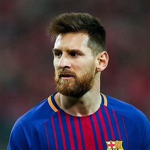

Messi
Messi is a football player who is very popular the football club he is in is argentina. He is the richest football player and has won uncountable world cups

Ronaldo
Ronaldo is a footballer that well the last time i saw him he was in Man U or Arsenal he has one i think 20 or more cups

de bryune
bryune is was a chelsea footballer at 2012 and he was born June 28 1991 the next club de bryune got sold to is wolfsberg and he became a very good footballer and got sold to Man city and he hasnt left that club.

William
William is a footballer that joined chelsea in august 2013 william won major trophies He remained in chelsea till 2019 and 2020 andjust decided to join Arsenal on august 2020 what a sad story

Neymar jr
Neymar jr is a brazzilian professional that is called the best footballer in the world he was born on Febuary 5 1992 neymar showed his skills like his driblling abilitys and other stuff during his time in barcelonia he met lionel messi and sarezz at august he moved to PSG making him the worlds expensive player Everyone new his name at that time.

Sarezz
Sarezz is one of the best strikers in the world He was born in January 24 1987 in salto Urugay.Is that even a country.In January 2011 Sarezz moved to liverpool and won the golden boot The next team Sarezz moved to is barcelonia take a flash back to neymar jr He met messi and neymar During barcelonia sarezz one so many trophies So we can agree that Sarezz is a goood player and let me know if i spelt his name wrong